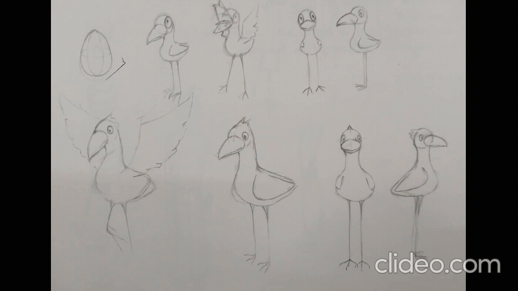

Ideation Phase

Early narrative planning and page layout exploration

Testing panel rhythm and pacing through iterations

Character design and movement studies for expressiveness
This project evolved through continuous experimentation with narrative pacing, visual rhythm, and character expressiveness. Sketching, iteration, and motion testing helped refine the storytelling before arriving at the final graphic novel.